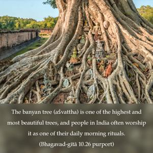
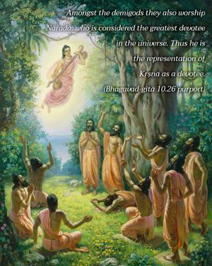
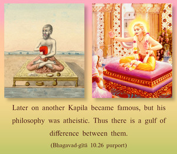

Of all trees I am the banyan tree, and of the sages among the demigods I am Nārada. Of the Gandharvas I am Citraratha, and among perfected beings I am the sage Kapila.



The banyan tree (aśvattha) is one of the highest and most beautiful trees, and people in India often worship it as one of their daily morning rituals. Amongst the demigods they also worship Nārada, who is considered the greatest devotee in the universe. Thus he is the representation of Kṛṣṇa as a devotee. The Gandharva planet is filled with entities who sing beautifully, and among them the best singer is Citraratha. Amongst the perfect living entities, Kapila, the son of Devahūti, is a representative of Kṛṣṇa. He is considered an incarnation of Kṛṣṇa, and His philosophy is mentioned in the Śrīmad-Bhāgavatam. Later on another Kapila became famous, but his philosophy was atheistic. Thus there is a gulf of difference between them.